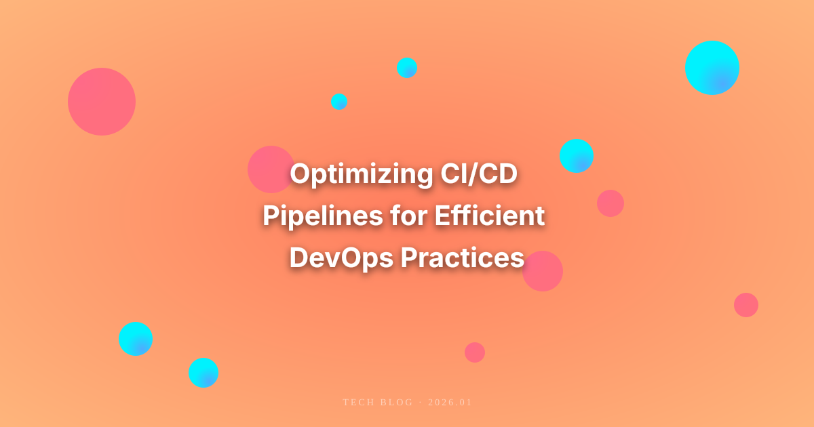

This article explores strategies for optimizing Continuous Integration/Continuous Deployment (CI/CD) pipelines to enhance DevOps practices. It covers best practices, tools, and methodologies to ensure faster and more reliable software delivery.
Optimizing CI/CD Pipelines for Efficient DevOps Practices
In today’s fast-paced software development landscape, the ability to quickly and efficiently deliver high-quality software is paramount. Continuous Integration (CI) and Continuous Deployment (CD) have emerged as essential practices within the DevOps framework, allowing teams to automate the integration and delivery processes. However, not all CI/CD pipelines are created equal. In this article, we will explore strategies for optimizing CI/CD pipelines to achieve more efficient DevOps practices.
Understanding CI/CD Pipelines
Before diving into optimization, it’s essential to understand what CI/CD pipelines are. A CI/CD pipeline is a series of automated processes that allow development teams to build, test, and deploy code changes quickly and reliably. The CI process involves automatically integrating code changes into a shared repository, while the CD process ensures that these changes are automatically deployed to production or staging environments.
Key Benefits of Optimized CI/CD Pipelines
- Faster Release Cycles: An optimized pipeline reduces the time from code commit to deployment, allowing teams to deliver features and fixes faster.
- Higher Quality Code: Automated testing within the pipeline helps catch bugs early in the development process, leading to higher-quality code.
- Increased Collaboration: CI/CD fosters collaboration among development, operations, and other teams by providing a shared framework for code integration and deployment.
- Reduced Risk: Frequent and automated deployments minimize the risk associated with large releases, making it easier to pinpoint issues when they arise.
Best Practices for Optimizing CI/CD Pipelines
1. Automate Everything
Automation is at the heart of CI/CD. By automating tests, builds, and deployments, teams can significantly reduce manual errors and speed up the process. Consider the following:
- Automated Testing: Implement unit tests, integration tests, and end-to-end tests. Tools like Selenium, JUnit, and Jest can help automate these tests, ensuring that code changes do not introduce new bugs.
- Continuous Monitoring: Use monitoring tools to automate the tracking of application performance and health post-deployment. This helps identify issues early before they escalate into larger problems.
2. Optimize Build Times
Long build times can be a bottleneck in CI/CD pipelines. Here are strategies to optimize build times:
- Parallel Builds: Use tools that support parallel execution of build processes. This can drastically cut down on build time by running multiple tasks simultaneously.
- Incremental Builds: Instead of rebuilding the entire project for every change, implement incremental builds that only compile modified code.
- Caching: Utilize caching mechanisms to store build artifacts and dependencies that don’t change frequently. This way, you can skip unnecessary compilation steps.
3. Implement Efficient Testing Strategies
Testing is a critical component of CI/CD. To optimize testing:
- Test Pyramid: Follow the test pyramid principle, where you have more unit tests than integration tests and fewer end-to-end tests. This ensures that the majority of your tests are fast and provide quick feedback.
- Selective Testing: Run only relevant tests based on the code changes. If a change is made to a specific module, only run tests related to that module.
- Test Data Management: Use robust test data management techniques to ensure that tests can run in isolation without dependencies on external data sources.
4. Use Feature Flags
Feature flags (or feature toggles) allow teams to deploy code without exposing it to end-users immediately. This practice enables:
- Safe Deployments: Code can be deployed in production without being visible to users, minimizing risk.
- A/B Testing: Feature flags make it easy to test new features with a subset of users, allowing for data-driven decisions about whether to enable or disable features.
- Simplified Rollbacks: If an issue arises, feature flags allow for quick deactivation of problematic features without rolling back the entire deployment.
5. Monitor and Analyze Pipeline Performance
Continuous improvement is key to optimizing CI/CD pipelines. Here’s how to monitor and analyze performance:
- Pipeline Metrics: Track metrics such as build times, deployment frequency, failure rates, and mean time to recovery (MTTR). These metrics provide insights into areas that need improvement.
- Feedback Loops: Establish regular feedback loops with developers and operations teams to discuss pipeline performance and areas for enhancement.
- Continuous Improvement: Use the data collected from monitoring to make informed decisions on where to focus optimization efforts.
6. Leverage the Right Tools
Choosing the right CI/CD tools can significantly impact the effectiveness of your pipeline. Consider:
- CI/CD Platforms: Tools like Jenkins, GitLab CI/CD, CircleCI, and Travis CI offer robust features for building and deploying applications efficiently.
- Containerization: Utilize containerization technologies like Docker and Kubernetes to create consistent environments and simplify deployment processes.
- Infrastructure as Code (IaC): Tools like Terraform and Ansible enable teams to manage infrastructure through code, streamlining provisioning and configuration processes.
7. Adopt a DevOps Culture
Optimizing CI/CD pipelines goes hand in hand with fostering a DevOps culture within your organization:
- Collaboration: Encourage collaboration between development and operations teams, breaking down silos and promoting shared ownership of the software delivery process.
- Continuous Learning: Promote a culture of continuous learning and experimentation. Encourage teams to stay updated with the latest practices, tools, and technologies in CI/CD and DevOps.
- Empower Teams: Give teams the autonomy to make decisions regarding their CI/CD practices, allowing for localized optimizations that cater to their specific needs.
8. Use Cloud-Based CI/CD Solutions
Cloud-based CI/CD solutions can provide scalability, flexibility, and ease of use:
- Scalability: Cloud services can automatically scale resources based on demand, ensuring that your CI/CD pipeline can handle varying workloads.
- Cost Efficiency: Pay-as-you-go pricing models reduce costs associated with maintaining on-premise infrastructure.
- Integration: Many cloud-based solutions come with built-in integrations for popular tools and services, simplifying the setup process.
Real-World Case Studies
To illustrate the impact of optimized CI/CD pipelines, let’s look at a few real-world examples:
Example 1: Spotify
Spotify adopted CI/CD practices to streamline their software delivery process. By implementing automated testing and deployment, they reduced their release cycle from weeks to days. This allowed them to quickly roll out new features and improvements based on user feedback, enhancing overall user satisfaction.
Example 2: Netflix
Netflix leverages CI/CD to support its massive scale and rapid feature releases. By using chaos engineering and automated rollback strategies, they ensure that their services remain reliable even during deployment. Their emphasis on monitoring and metrics allows them to continuously optimize their CI/CD processes, maintaining a high level of service availability.
Conclusion
Optimizing CI/CD pipelines is crucial for organizations looking to enhance their DevOps practices and deliver high-quality software more efficiently. By automating processes, optimizing build and testing strategies, leveraging the right tools, and fostering a collaborative culture, teams can significantly improve their software delivery capabilities. As the software development landscape continues to evolve, organizations that prioritize CI/CD optimization will be better positioned to meet the demands of their users and stay ahead of the competition.
Call to Action
Are you ready to optimize your CI/CD pipeline? Start by assessing your current setup and identifying areas for improvement. Implement the best practices outlined in this article, and watch your software delivery process transform for the better!